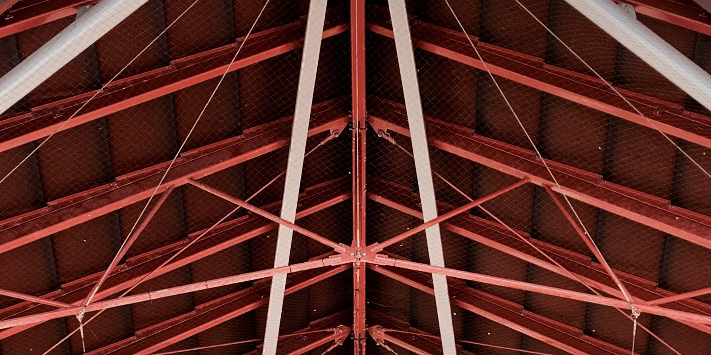
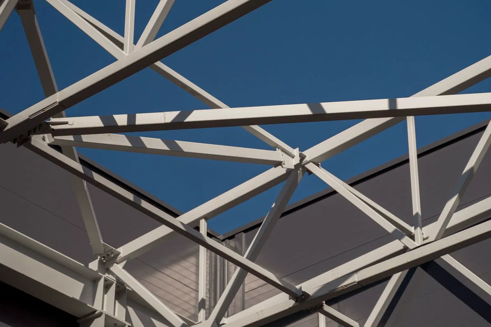
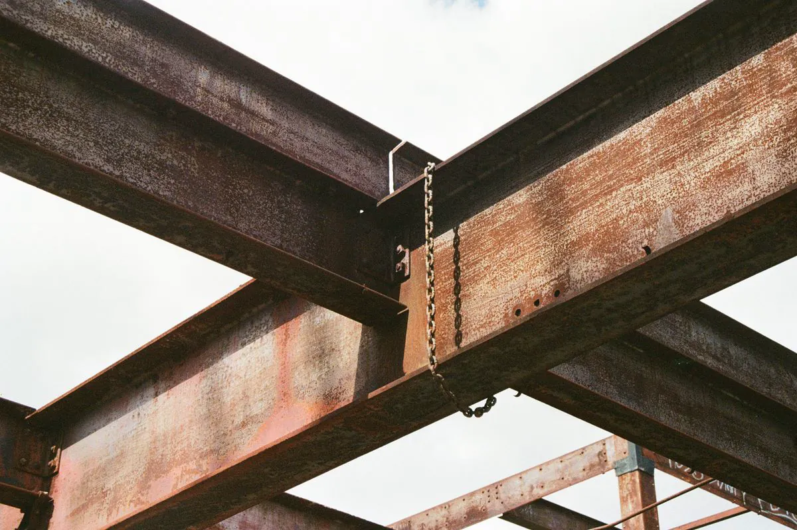
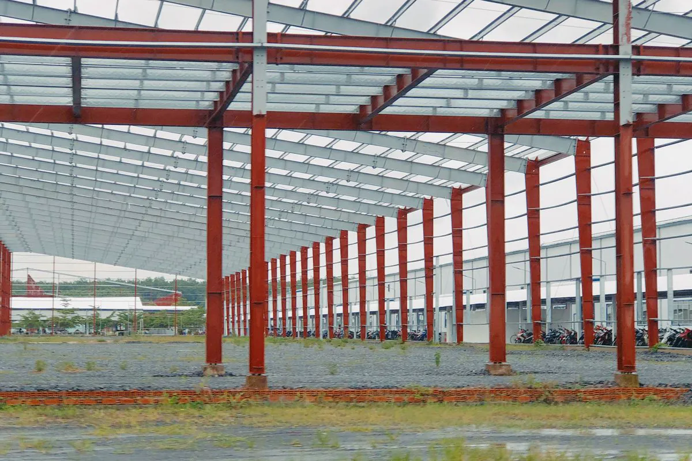

Por que A572 e não A36 na viga?
Com 38% a mais de escoamento, a viga de A572 Gr. 50 pode ser mais leve para a mesma carga. Por isso virou o padrão dos perfis laminados W no Brasil.

Somos especialistas em montagem de estrutura metálica e trabalhamos todo dia com estes elementos. Aqui estão as treliças, os perfis e os aços mais usados, com diagramas interativos e uma calculadora de peso de perfil.
Uma estrutura metálica é feita de perfis (W, HP, U, cantoneira, U enrijecido, Z e tubos) de aço estrutural (em geral ASTM A572 Gr. 50, A36, A500 ou ZAR), unidos por parafusos e solda. Coberturas e grandes vãos usam treliças — Pratt, Howe, Warren, Fink, em arco ou espaciais — que vencem o vão com barras tracionadas e comprimidas em triângulos.
A Axial Engenharia é especialista em montagem de estrutura metálica em Vitória e na Grande Vitória. Conhecer o perfil, o aço e a ligação de cada peça é o que permite conferir o que chegou do fabricante, planejar o içamento e apertar cada parafuso do jeito certo.






Toque em cada tipo. Em laranja, as barras internas (diagonais e montantes); em azul-escuro, os banzos.
Montantes verticais e diagonais inclinadas em direção ao centro do vão. Sob carga de gravidade, as diagonais trabalham tracionadas e os montantes comprimidos — como os montantes são curtos, a flambagem é controlada. Por isso é a treliça de banzos paralelos mais usada em aço.
Espelho da Pratt: as diagonais apontam para os apoios. Sob gravidade, as diagonais ficam comprimidas e os montantes tracionados. Nasceu para madeira, que trabalha bem à compressão; em aço aparece quando a carga predominante é de sucção de vento, que inverte os esforços.
Só diagonais, em zigue-zague, formando triângulos. As diagonais alternam tração e compressão. Tem menos barras e menos nós, o que simplifica a fabricação e a montagem; montantes podem ser acrescentados quando o banzo precisa de apoio intermediário.
A treliça triangular das coberturas em duas águas, com as barras internas em forma de W. Divide o banzo superior em trechos curtos, o que evita flambagem sem perfis pesados. É a “tesoura” clássica de casa, sobrado e galpão pequeno.
Dois banzos curvos ligados por diagonais. O arco leva a carga aos apoios principalmente por compressão, vencendo vãos grandes com pouco material — mas empurra os apoios para fora, e esse empuxo precisa de tirante ou fundação preparada.
Montamos arcos treliçados em cobertura metálica para quadra.
Duas malhas de barras (superior e inferior) ligadas por diagonais em pirâmide, normalmente tubos unidos em nós. Distribui a carga nas duas direções e cobre grandes áreas com apoio em poucos pilares — é a cobertura típica de posto de combustível e pavilhão.
Laminados (saem prontos da usina) e formados a frio (dobrados a partir de chapa). Toque para ver a seção e onde cada um entra.
O “I” moderno. O W é mais alto que largo e trabalha como viga; o HP tem abas largas, quase quadrado, e trabalha como pilar e estaca. O nome traz altura e peso: W 250 × 32,7 tem cerca de 250 mm de altura e pesa 32,7 kg/m.
Seção em U com paredes grossas. Aparece em vigas secundárias curtas, banzos de escada, travessas e reforços. Por não ser simétrico, pode torcer se a carga não passar pelo lugar certo — detalhe que o projeto resolve com a ligação.
Duas abas em ângulo reto, iguais ou desiguais. É a peça faz-tudo: barra de treliça, contraventamento, ligação entre viga e pilar, apoio de fôrma e arremate. Em treliça costuma ir em dupla, costas com costas.
Chapa fina dobrada em U com pequenas abas de enrijecimento nas pontas, que impedem a borda de ondular. Leve e barato, é o perfil das terças, tesouras leves e estruturas de cobertura, em geral galvanizado.
Abas para lados opostos. Dois Z se encaixam e podem ser sobrepostos nos apoios, criando terças contínuas que vencem vãos maiores entre pórticos. Muito usado em galpão com terças longas.
Seção fechada, que resiste bem à torção e à flambagem nas duas direções. Ótimo como pilar esbelto, barra de treliça e estrutura aparente — tem menos cantos para acumular sujeira e é fácil de pintar.
Escolha o perfil, informe as medidas, o comprimento e a quantidade. O peso sai da área da seção × 7.850 kg/m³.
Resistência mínima de escoamento (fy) e de ruptura (fu) conforme a especificação de cada aço.
| Aço | Tipo | fy mín. | fu mín. | Onde aparece |
|---|---|---|---|---|
| ASTM A572 Gr. 50 | Alta resistência e baixa liga | 345 MPa | 450 MPa | Perfis W e HP de vigas e pilares |
| ASTM A36 | Aço-carbono estrutural | 250 MPa | 400 MPa | Chapas, cantoneiras, perfis U, chumbadores |
| ASTM A588 | Patinável (resistente à corrosão atmosférica) | 345 MPa | 485 MPa | Estrutura aparente longe do mar |
| ASTM A500 Gr. B | Tubo formado a frio | 317 MPa* | 400 MPa | Pilares tubulares, treliças, escadas |
| ZAR 230 / ZAR 345 | Chapa zincada para formados a frio | 230 / 345 MPa | 310 / 430 MPa | Terças Ue e Z, steel deck, telhas |
| ASTM F3125 Gr. A325 | Parafuso estrutural de alta resistência | — | 825 MPa | Ligações parafusadas principais |
* Tubos quadrados e retangulares; tubos redondos A500 Gr. B têm fy mínimo de 290 MPa. Valores mínimos de especificação; o que vale na obra é o certificado de qualidade da usina, que conferimos no recebimento.
Com 38% a mais de escoamento, a viga de A572 Gr. 50 pode ser mais leve para a mesma carga. Por isso virou o padrão dos perfis laminados W no Brasil.
Sem pintura, não: a pátina não se estabiliza com maresia constante. Na Grande Vitória, junto ao mar, vale galvanização ou pintura para ambiente marinho.
Galvanização a fogo protege por dentro e por fora e dura mais sem manutenção; pintura permite cor e retoque fácil. Muitas obras combinam as duas.
| Ligação | Como é | Na montagem |
|---|---|---|
| Parafusada | Chapas e cantoneiras furadas, parafusos de alta resistência | Rápida, sem faísca; pré-aperto e aperto final pela NBR 8800 |
| Soldada | Solda de filete ou penetração, de preferência em fábrica | Em campo só onde o projeto prevê, com soldador qualificado e inspeção |
| Base de pilar | Placa de base, chumbadores e graute | Chumbador conferido antes; graute depois do prumo |
| Sistema | Indicado para |
|---|---|
| Galvanização a fogo (NBR 6323) | Orla, área externa, peça difícil de repintar |
| Primer epóxi + acabamento PU | Ambiente marinho e industrial, com cor definida |
| Primer + esmalte alquídico | Ambiente interno e seco |
| Galvanizado + pintura (duplex) | Maior durabilidade em ambiente agressivo |
Em qualquer sistema, o ponto fraco é o que se danifica na montagem: riscos de lingada, cabeças de parafuso e soldas de campo. Por isso o retoque no mesmo sistema faz parte do nosso escopo — sem ele, a corrosão começa exatamente ali.
Vigas W, steel deck ZAR e conectores. Ver laje
Pilares HP ou tubo, vigas W, tesoura Fink. Ver sobrado
Vigas W ou U, chapa xadrez ou painel. Ver mezanino
Pórticos, treliça Pratt, terças Z. Ver galpão
As duas têm montantes verticais e diagonais, mas as diagonais apontam para lados opostos. Na Pratt, sob carga de gravidade, as diagonais ficam tracionadas e os montantes comprimidos; na Howe acontece o contrário. Como peça comprimida precisa ser mais robusta para não flambar, a Pratt costuma ser mais econômica em aço.
Nos perfis laminados W e HP de vigas e pilares, o ASTM A572 Grau 50, com escoamento de 345 MPa. O ASTM A36, de 250 MPa, aparece em chapas, cantoneiras e perfis U. Tubos estruturais seguem a ASTM A500 e perfis formados a frio galvanizados usam aço ZAR.
Multiplique a área da seção transversal pela densidade do aço, 7.850 kg/m³: cada 100 mm² de seção pesam cerca de 0,785 kg por metro. Nos perfis W o peso já vem no nome — um W200×26,6 pesa 26,6 kg/m. Depois é só multiplicar pelo comprimento e pela quantidade.
O laminado (W, HP, U e cantoneira) sai da usina com a forma final, tem paredes grossas e é usado em vigas e pilares principais, seguindo a ABNT NBR 8800. O formado a frio (U enrijecido, Z, tubos) é dobrado a partir de chapa fina, é mais leve e aparece em terças, tesouras e estruturas leves, seguindo a ABNT NBR 14762.
O mais comum é o U enrijecido (Ue) ou o perfil Z galvanizado, formados a frio. O Z permite sobrepor terças nos apoios e dar continuidade, o que ajuda em vãos maiores. A seção e a espessura saem do cálculo com o vão entre pórticos e a carga de vento.
Sem pintura, não é recomendado. A pátina protetora do aço patinável depende de ciclos de molhagem e secagem com pouco cloreto; na orla, com maresia constante, ela não se estabiliza. Em obra litorânea a proteção usual é galvanização a fogo ou pintura para ambiente marinho.
Especialistas em montagem na Grande Vitória. Mande o projeto e o endereço — retornamos no mesmo dia útil.
Inspeção, ensaio e projeto conduzidos sob códigos reconhecidos no Brasil e no exterior, por profissionais qualificados nos organismos de certificação da área.
 Inmetro
Instrumentos de medição com calibração rastreável à Rede Brasileira de Calibração.
Inmetro
Instrumentos de medição com calibração rastreável à Rede Brasileira de Calibração.
 ASME
Código ASME Seção VIII no cálculo e na avaliação de vasos de pressão e caldeiras.
ASME
Código ASME Seção VIII no cálculo e na avaliação de vasos de pressão e caldeiras.
 ABNT
Normas NBR aplicáveis a cada laudo técnico, ensaio e projeto estrutural.
ABNT
Normas NBR aplicáveis a cada laudo técnico, ensaio e projeto estrutural.
 Abendi
Ensaios não destrutivos executados por profissional qualificado pelo SNQC.
Abendi
Ensaios não destrutivos executados por profissional qualificado pelo SNQC.
 CMSE
Certified Machinery Safety Expert aplicado à adequação de máquinas à NR-12.
CMSE
Certified Machinery Safety Expert aplicado à adequação de máquinas à NR-12.
Logotipos exibidos como referência às normas, códigos e qualificações aplicados nos serviços.